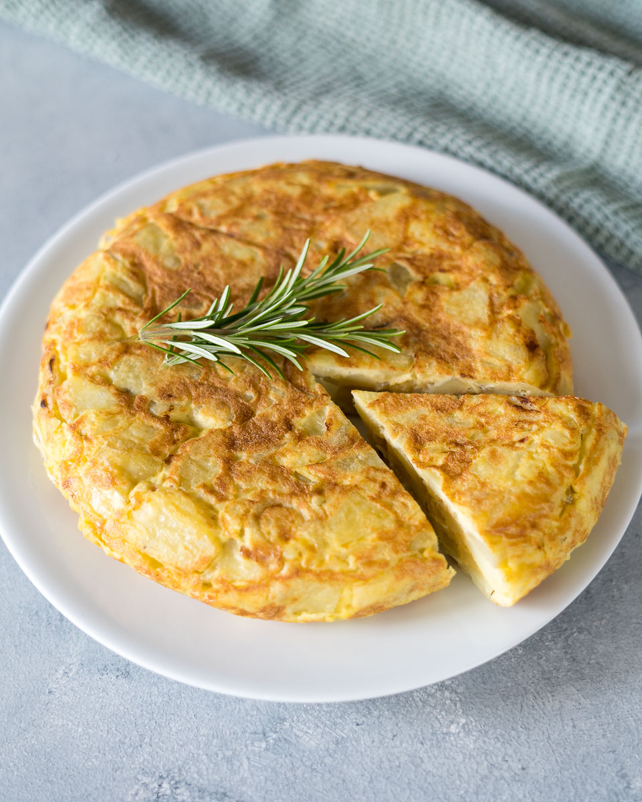

Spanish Omelette
Spanish Omelette

Ingridients
- Potatoes
- Onione
- Eggs
- Sea salt
- Olive oil
- Peel and cut the potatoes. Once the potato is peeled, we cut them into long wedges and then slice them into small pieces. The shape will be then similar to a triangle. You can always use a mandolin to cut the potatoes as it will save you time. If you want to prepare this step ahead of time, leave the peeled and cut potatoes in water until you are ready to use them.
- Finely slice the onion and add the onion and cut potatoes onto a baking tray. Drizzle some olive oil on the top, cover with tin foil paper and bake for about 30 minutes. We place a silicone baking mat on our tray before so the potatoes don’t stick to the bottom and the tray doesn’t get dirty. It's important to cover the baking tray as you don't want the potatoes to be crispy. The potatoes will be ready when they soften and you can easily cut them with the side of a fork.
- Using a big mixing bowl, add the eggs. Add the eggs to a big mixing bowl. Whisk until they are perfectly combined. Then add the cooked potatoes and onion and the sal to the egg mixture and mix all the ingredients using a big wooden spoon or spatula.
- Heat some oil in a frying pan to medium heat and pour the egg and potato mixture. Make sure the mixture is evenly spread out. Leave cooking for a couple of minutes and when the bottom part starts to brown, get ready for the most challenging part! First, make sure the egg is not sticking to the pan by running a spatula along the outer edge of the tortilla.
- Flip your tortilla. Here comes the fun part of making Spanish tortilla. Using a big plate (it needs to be bigger than the pan surface), place the plate facing down on the top of the pan. Hold the plate with one hand firmly and flip the pan using the other hand. Slowly, bring the tortilla into the pan again, to cook the other side. Leave cooking for a few more minutes and when ready, repeat the flip using the serving plate. If using a frittata pan, simply flip the pans so the omelette will cook on the other side
On egin!!